01
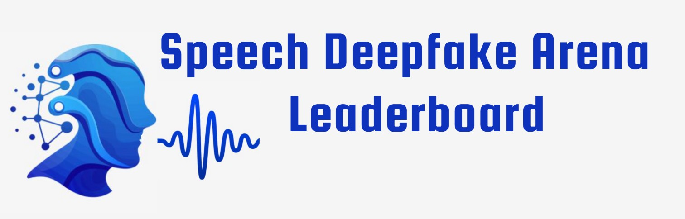
Researcher working at the intersection of machine learning and speech processing, with a focus on making audio deepfake detection more robust and reliable.

Background, academic path, and the questions that drive my research.
I am Hoan My Tran, a lecturer and researcher at IUT de Lannion, University of Rennes, France. I defended my Ph.D. in Computer Science in March 2026 at the University of Rennes, within the IRISA / EXPRESSION research team.
My doctoral research was supervised by Prof. Damien Lolive, Prof. François Goasdoué, Prof. Pierre-François Marteau, Asst. Prof. Arnaud Delhay-Lorrain, and Asst. Prof. Aghilas Sini.
Previously, I studied computer science at IUT de Villetaneuse (Sorbonne Paris North University) and earned an engineering degree specializing in software engineering from IMT Atlantique.
Beyond research, I enjoy communicating science to wider audiences. I was invited to give a TEDx talk ↗ about deepfake technology and its societal impact.
Research contributions in speech deepfake detection, efficient deep learning, and representation learning.

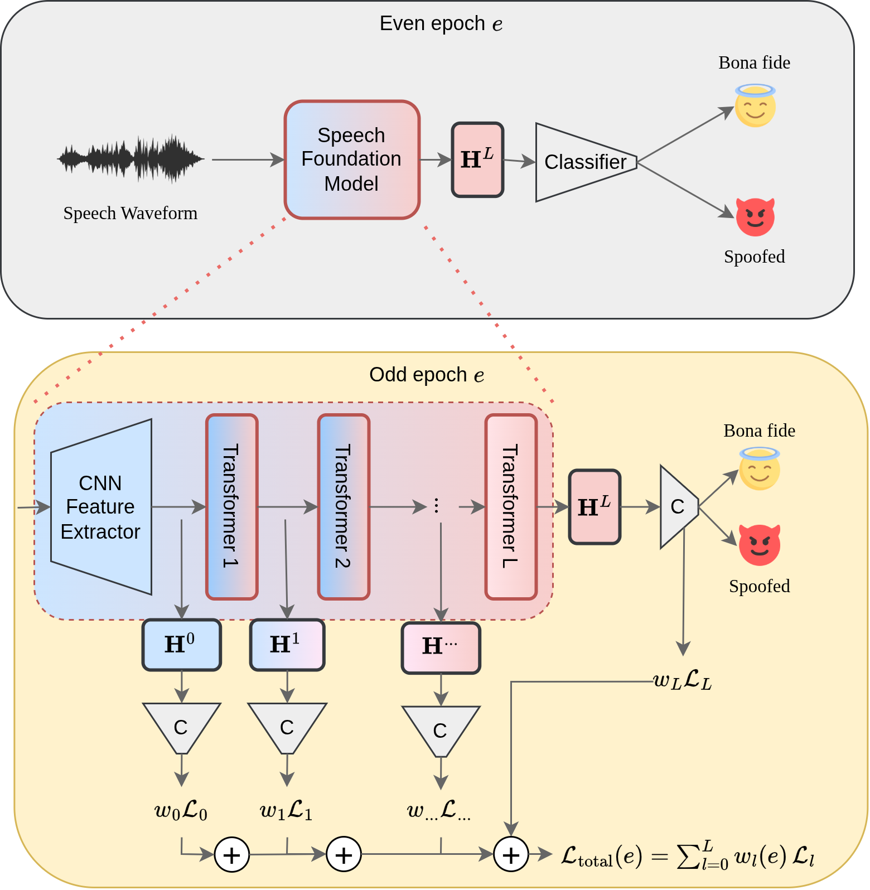
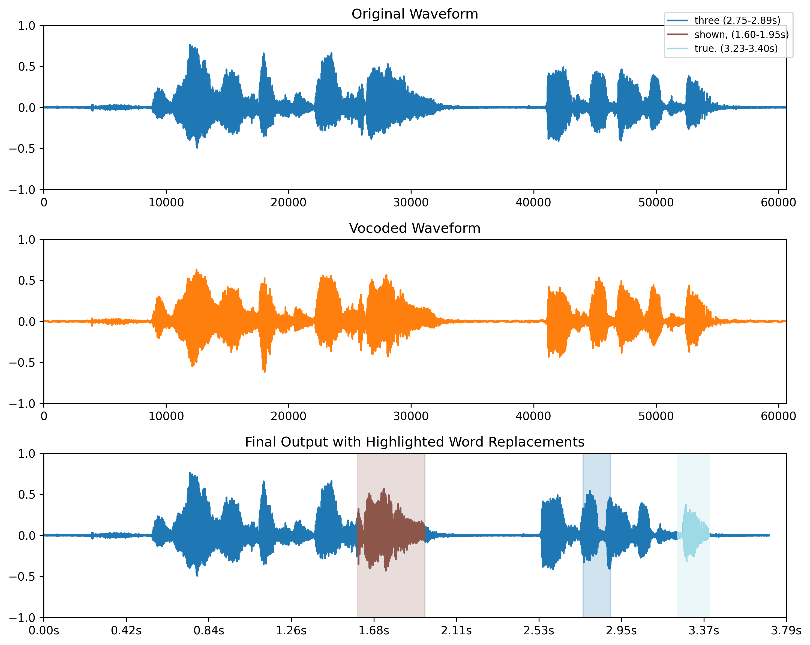
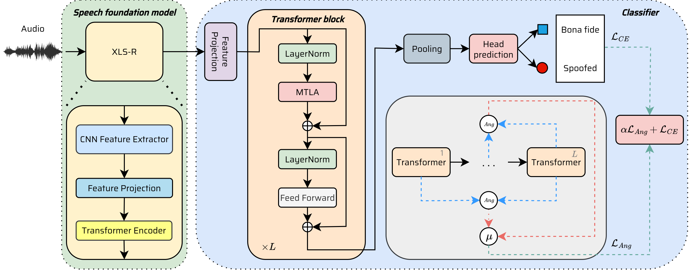
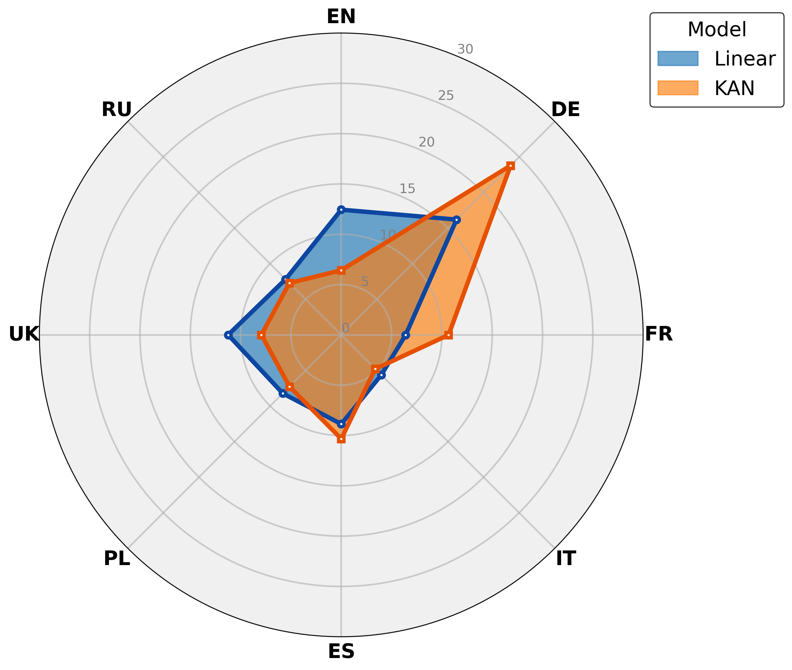
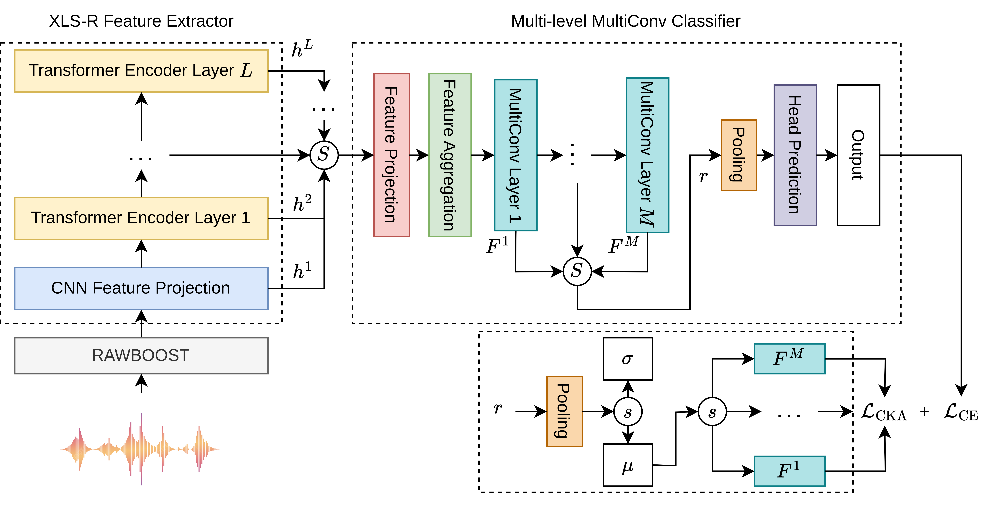
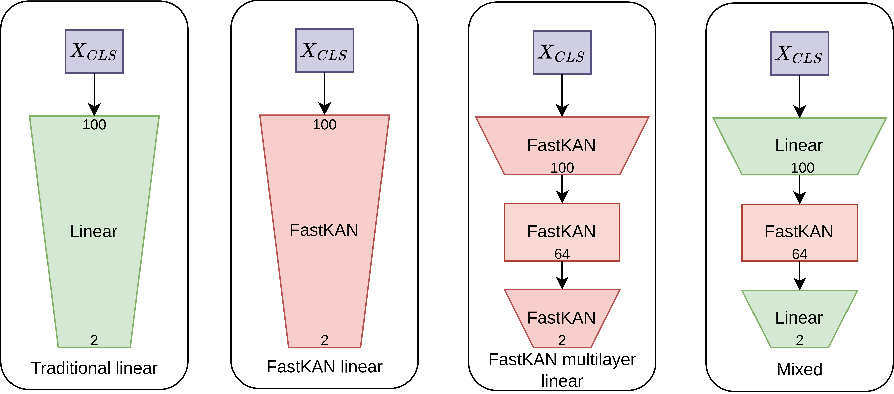
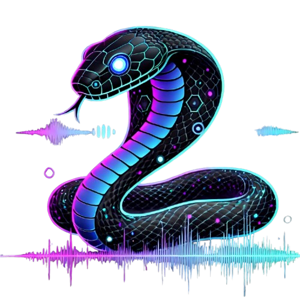
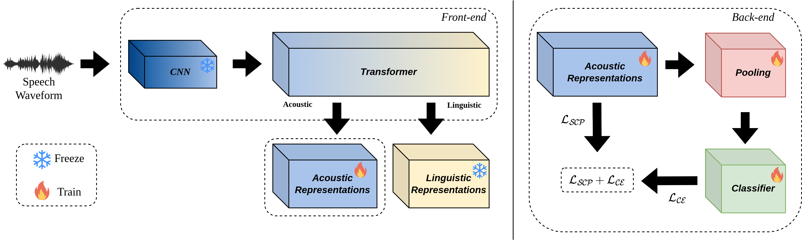
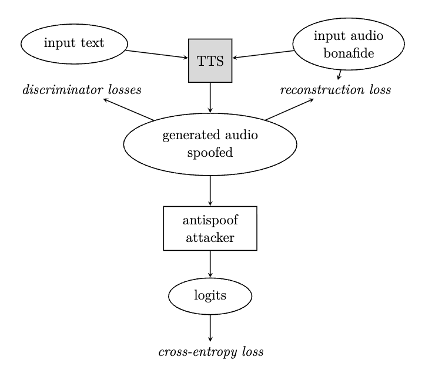
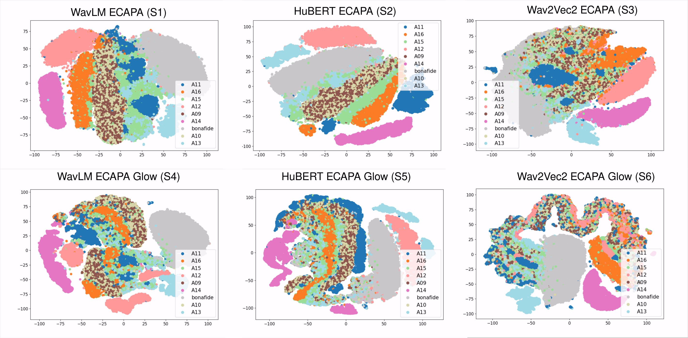
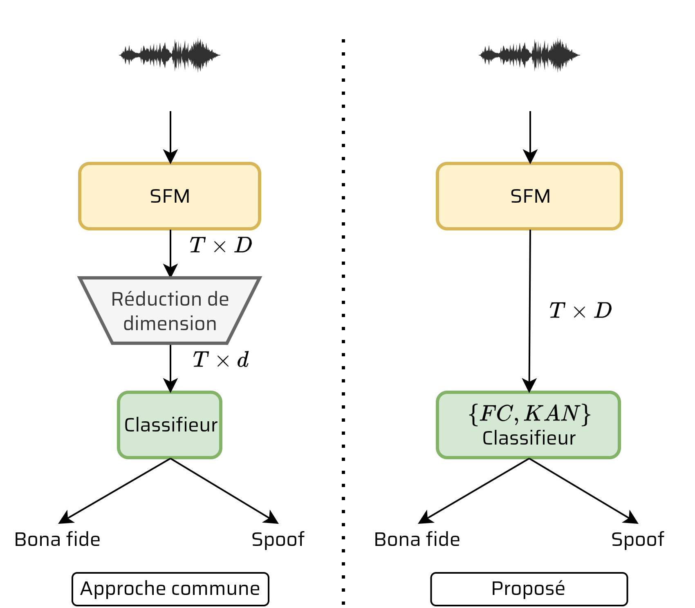
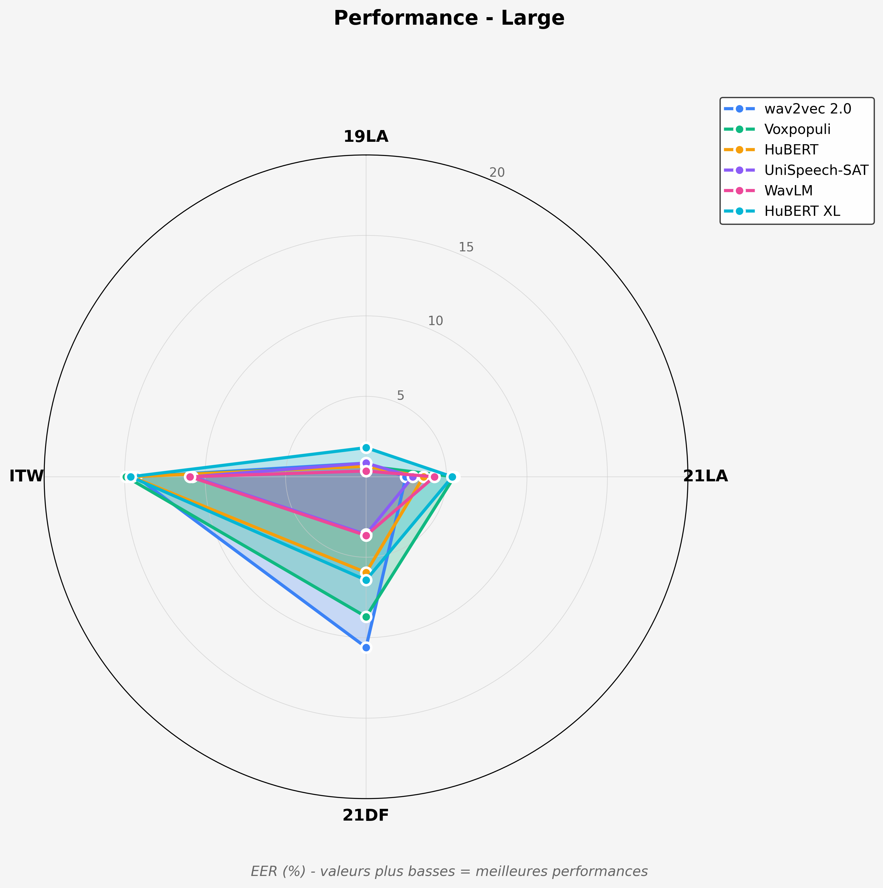
A path through research, teaching, and software engineering.
IUT de Lannion – University of Rennes, Lannion, France
National Institute of Informatics (NII), Tokyo, Japan · Advised by Prof. Junichi Yamagishi, Asst. Prof. Xin Wang, Xuechen Liu, and Wanying Ge
IUT de Lannion – ENSSAT – University of Rennes, Lannion, France
Talend – Nantes, France
Horoquartz – Saint-Herblain, France
University of Rennes, Lannion, France · Advised by Prof. Damien Lolive, Prof. François Goasdoué, Prof. Pierre-François Marteau, Asst. Prof. Arnaud Delhay-Lorrain, Asst. Prof. Aghilas Sini
IMT Atlantique, Nantes, France
IUT de Villetaneuse – Sorbonne Paris North University, Villetaneuse, France